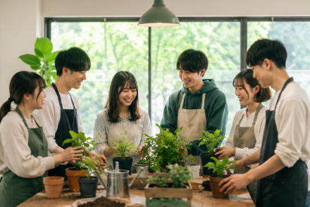

活動内容
植物環境の最適化
気温、湿度、土の環境などを調べ、植物によっていい環境かを調べています。
栽培、育成を通して、新しい品種を開発
いろんな環境変化、遺伝子組み換えなどを通して、収量の増加、耐病性の向上を目指します。
普段の活動
- 水やり等の植物の環境整備で植物に優しく
- 栽培、育成研究を通して品種改良をする
- 植物流通の環境整備を通していろんな人たちに届ける
年間行事
| 今年 | 行事 |
|---|---|
| 4月 | 新入生歓迎会と自分の育てる植物マッチング |
| 5月 | 1ヶ月育てた植物の中間発表 |
| 6月 | 学校に色とりどりにキャンペーン |
| 7月 | 夏祭りの出店準備・運営 |
| 8月 | 学校外をめぐり。観葉植物に触れる |
| 9月 | 秋の育成アップデート・環境調査 |
| 10月 | 植物とインテリアの最適化コンペ |
| 11月 | 大学祭（学園祭）の準備、運営 |
| 12月 | 冬のメンテナンスと忘年会 |
| 1月 | 冬の湿度管理研究 & 春への準備 |
| 2月 | 大きくなった植物の植え替え |
| 3月 | 次年度に向けた研究報告会 |
1年間こんな感じでやっています。
何かあったら力強い、たくましい先輩がいるので安心です。
活動写真

自然豊かな環境で、笑顔が絶えない研究室です。